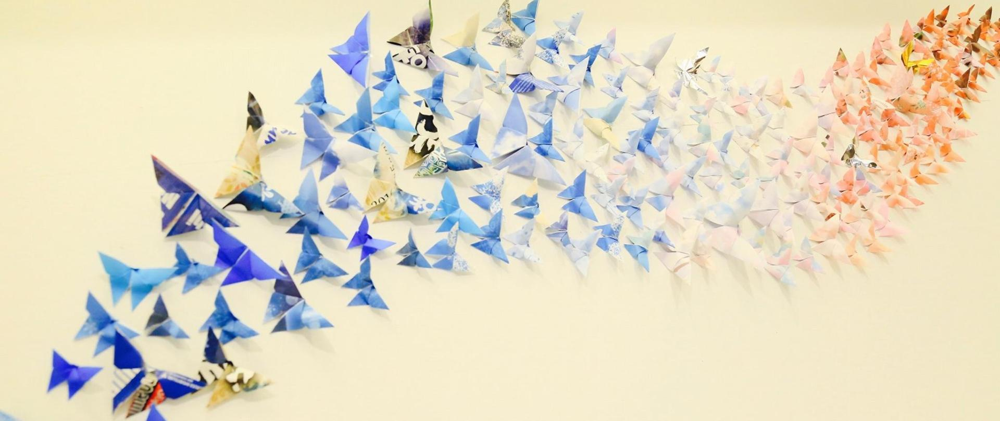

Hi, I am Darsh Aggarwal, am on a mission to make learning awesome. My platform makes it easy to create,
share and learn the art of origami in minutes.
Origami is often associated with Japanese culture. Modern origami practitioners generally discourage
the use of cuts, glue, or markings on the paper. Origami folders often use the Japanese word kirigami
to refer to designs which use cuts.